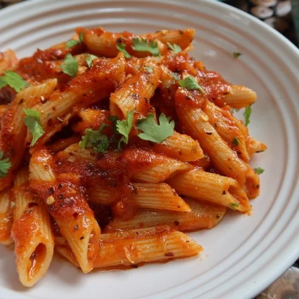

Home
Pasta

Description
Red Sauce Pasta is a classic and comforting Italian-inspired dish made with pasta tossed in a rich tomato-based sauce.
The sauce contains ripe tomatoes, garlic, onions, olive oil, and a blend of herbs like basil and oregano.
Often simmered to deepen the flavor, the red sauce can also include optional ingredients like chili flakes for heat, parmesan for creaminess, or vegetables and meats for heartiness.
Served hot and garnished with fresh herbs or cheese, red sauce pasta is a flavorful, satisfying meal that's perfect for lunch or dinner.
This vibrant dish is known for its bold, tangy flavor and smooth texture, which goes beautifully with a variety of pasta types such as penne, spaghetti, fusilli, or farfalle.
It can be enjoyed as a light vegetarian meal or elevated with additions like grilled chicken, sautéed mushrooms, or even seafood.
Ideal for both casual weeknight dinners and more elegant occasions, red sauce pasta is often paired with crusty bread, a crisp salad, or a glass of red wine.
Its inviting aroma and rich taste make it a beloved staple in kitchens around the world. Whether homemade or served at your favorite Italian restaurant, red sauce pasta delivers comfort and flavor in every bite.
Ingredients
- Pasta – Pasta variety preferred for this recipe is either Penne or zussili. However you can use any pasta variety for this dish. You can also choose between regular pasta or whole wheat pasta
- Spices & Herbs - Chili flakes and mixed herbs are used. In addition you can add oregano too.
- Onion
- Garlic
- Capsicum
- Corn
- Tomatoes
- Cheese - Either Parmesan or Cheddar
- Olive oil
Steps
- Bring a large pot of salted water to a boil.
- Add the pasta and cook according to the package instructions (usually 8–10 minutes) until al dente.
- Drain the pasta, but reserve ½ cup of the pasta water. Set pasta aside.
- In a large pan or skillet, heat olive oil over medium heat.
- Add the chopped onions and sauté for 2–3 minutes until soft and translucent.
- Add minced garlic and sauté for another 30 seconds until fragrant..
- Stir in the chopped tomatoes (or crushed tomatoes) and tomato paste (if using).
- Cook on medium heat for about 8–10 minutes, stirring occasionally, until the tomatoes break down and the sauce thickens slightly..
- Add salt, sugar, black pepper, red chili flakes, oregano, and basil. Stir well.
- If the sauce is too thick, add a few tablespoons of the reserved pasta water to loosen it.
- Add the cooked pasta to the sauce in the pan.
- Toss well to coat the pasta evenly. Cook for another 1–2 minutes, allowing the flavors to combine.
- Adjust seasoning if needed.
- Plate the pasta. Garnish with freshly grated Parmesan cheese and a sprinkle of herbs. Serve hot, optionally with garlic bread or a side salad.